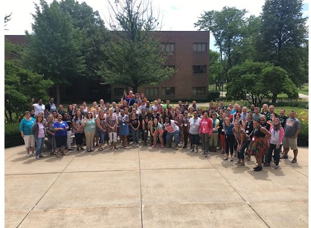
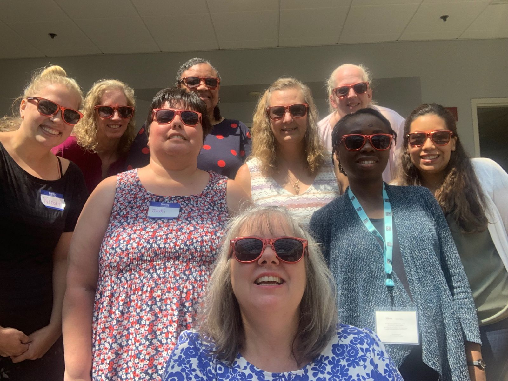

Our history · 2010 to today
The PUMP-CS Story
Sixteen years of computer science teacher preparation, communities of practice, state standards, and research in Wisconsin.
Expanding access to computer science, one teacher at a time
Since 2010, PUMP-CS has supported teacher professional learning, communities of practice, curriculum implementation, state standards adoption, and research focused on computer science teaching and teacher preparation. Along the way it has built a statewide network of educators, school leaders, researchers, and industry partners committed to increasing access to computer science.
PUMP-CS has designed and delivered large-scale professional development for classroom teachers, instructional coaches, district leaders, pre-service teachers, and higher education faculty. Programs have ranged from one-day workshops to multi-week summer institutes, and the larger CS Ed Week events have included up to five parallel tracks serving scores of teachers.
The work has been supported by more than $4 million in National Science Foundation funding, over $1 million from the U.S. Department of Education's Education Innovation and Research (EIR) program, and support from Google CS4HS, Code.org, the Milwaukee Tech Hub, Microsoft TechSpark, and the Wisconsin Technology Initiative.
Sixteen years of cohorts
Wisconsin teachers, learning together



Impact by the numbers
Sixteen years of CS teacher preparation
Timeline
2010 to Present Milestones
- 2010
A statewide coalition forms
Leaders from the Wisconsin Department of Public Instruction, high school CS teachers, and several universities came together to plan Wisconsin's first CS-specific teacher workshops. Dennis Brylow represented Marquette's computer science faculty. The group sought early support from local sponsors, Google's CS4HS program, and the National Science Foundation.
- Early years
Wisconsin-Dairyland CSTA is born
The Wisconsin-Dairyland chapter of the Computer Science Teachers Association launched at an early PD gathering hosted at Marquette. The chapter still advises PUMP-CS on its PD offerings, and its members form most of the facilitator corps.
- 2014
First NSF award with UW–La Crosse
About $892,000 from NSF funded a two-track PD sequence that prepared in-service and pre-service teachers, regardless of prior CS background, to teach Exploring Computer Science or CS Principles. A second track added a CS endorsement through a Teaching Computer Science methods course offered online or in hybrid format.
NSF CNS-1339392 (Marquette) · CNS-1339179 (UW–La Crosse)
- 2016
Growth in Milwaukee Public Schools
New CS courses were running in seven of the largest MPS high schools. A new $1 million NSF award, with UW–Milwaukee and MPS, set out to certify 200 MPS teachers: enough to bring computer science to every elementary, middle, and high school in the state's largest and most diverse district. By early 2018, 62 teachers and more than 1,800 students had taken part over three school years.
NSF CNS-1640217 · 2017–2020
- 2017
Wisconsin's first K–12 CS standards
Brylow co-chaired the Computer Science Standards Writing Committee with educator Joseph Kmoch. State Superintendent Tony Evers approved the standards in June 2017, giving districts a template for integrating CS in elementary grades and giving every middle and high school student access to CS instruction.
- 2019
Research-practice partnership and statewide reach
A nearly $2 million NSF award with MPS, The Learning Partnership, and the American Institutes for Research funded research into how early CS exposure shapes later learning and why initiatives work unevenly across a city. PD cohorts also expanded beyond Milwaukee to Eagle River, Green Bay, and Wausau, with regional partners such as CESA 7, and a new CS alternative licensure pathway.
NSF CNS-1923597 · CNS-1923581 · CNS-1923013 · 2019–2023
- 2020
Project {FUTURE} reaches elementary schools
A five-year U.S. Department of Education EIR award, matched by Code.org and shared with Sacred Heart University in Connecticut, brought CS professional learning to 750 teachers at 30 partner elementary schools in Wisconsin and Connecticut.
- 2012–2021
32,000 hours of professional development
Over this decade, PUMP-CS programs ranged from one-day workshops to multi-week summer institutes, and an annual CS Educators Summit at Green Lake brought the state's CS teachers together.
- 2025
Fourth NSF award for ECS teachers in MPS
A three-year, nearly $1 million NSF Computer Science for All award, Marquette's fourth NSF grant for this work since 2014, adapts a Marquette CS bootcamp into PD for a cohort of 15 ECS teachers over two school years. The project builds a professional learning community and measures results with the Capacity, Access, Participation, Experience (CAPE) framework that MPS uses for equitable CS education.
- 2027–28
AI + CS Professional Development Week
The proposed week brings these programs together in one multi-track event and adds artificial intelligence to the PUMP-CS PD model. See the PD Week plan.